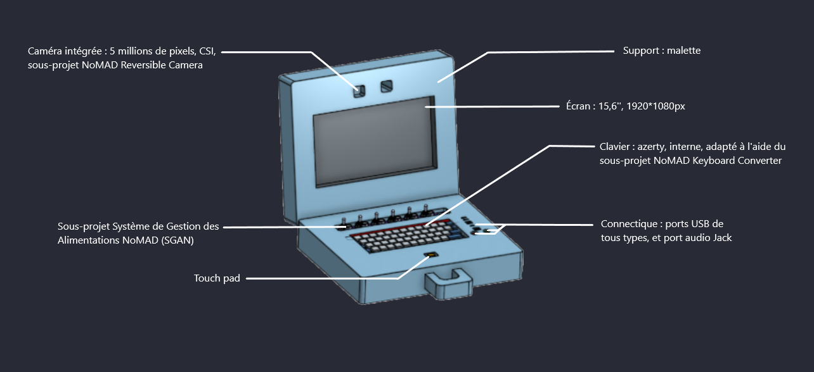

Les sous-projets NoMAD
Le projet NoMAD englobe un large panel d'objectifs remplis par diverses systèmes. Dans un soucis de spécialiser les attentes chaques sous-systèmes de l'ordinateur, nous avons créé un ensemble de quatre sous projet. Vous trouverez ici leur présentation ainsi que certaines ressources.
// Afin d'améliorer l'ergonomie et le poids de l'ordinateur, l'équipe a souhaité intégrer un clavier d'ordinateur portable interne, si possible de récupération afin d'optimiser les coûts. Malheureusement, les sorties des claviers internes présents sur le marché ne possèdent pas de sortie USB, mais plutôt des nappes filaires communicant avec un protocole inconnu des membres du projet.
Le sous-projet NoMAD Keyboard Converter (NKC) vise donc à rechercher et déterminer les protocoles utilisés par les claviers internes du marché, et créer un convertisseur de signaux d'une nappe filaire vers un branchement en USB.
Ce projet est actuellement mené par Corentin Mucci et Mattéo Turquetil.

Un système en veille est un système qui consomme. Un système qui consomme peu, certes, mais qui consomme quand même. Nous avons donc choisi de créer un système de gestion des alimentations capable de mettre hors de tension des composants précis en cas d'inutilité.
Nous avons également fait le constat que le monde actuel regorge de menaces informatiques, bien plus nombreuses et présentes que nous ne pouvons le voir. Les attaques et actes de cyberpiraterie augmentent sans cesse. Nous souhaitons ainsi ajouter une couche de sécurité à notre ordinateur. C'est donc pour cela que le système de coupure est commandé par l'utilisateur de la machine, avec une ouverture physique des circuits électroniques.
Ce projet est actuellement mené par Arthur Saña
L'ordinateur NoMAD, basé sur un nano-ordinateur Raspberry Pi modèle 4 sera orienté vers les applications du génie électrique, de l'informatique, de l'informatique industrielle, et de la cybersécurité. Différent type de systèmes d'exploitations préexistant pourraient être utilisés pour cela néanmoins tous montrent des défauts.
Le système de Raspberry Pi, nommé Raspbian, n'est pas au goût de tous en termes de graphiques, et ne dispose de presques aucun outils de cybersécurité
Le système d'exploitation Kali Linux, plus évolué, manque quand a lui de certains logiciels et librairies.
Le NoSE aura donc pour fonction de combler les besoins des utilisateurs en génie électrique, en ajoutant certains logiciels et autres fonctionnalités telles que la gestion des alimentations par le système SGAN de l'équipe NoMAD.
Ce projet sera prochainement mené par Corentin Mucci et MAttéo Turquetil.
À l'avenir, une version du NoSE sera disponible sur ce site internet, cliquez sur "Voir plus" pour en savoir plus.
Le NoMAD se veut être un ordinateur de terrain. Un ordinateur utilisé sur des chantiers de tous types, en salle ou en extérieur. Nombreux sont les moments où une caméra capable de filmer l'avant de l'ordinateur serait utile.
Le projet NRC est donc de créer une caméra capable de filmer sous deux angles différents : le visage de l'utilisateur, et l'avant de l'ordinateur. Ce système sera commandé par une entrée physique, comme un interrupteur.
Ce projet est actuellement mené par Arthur Saña.